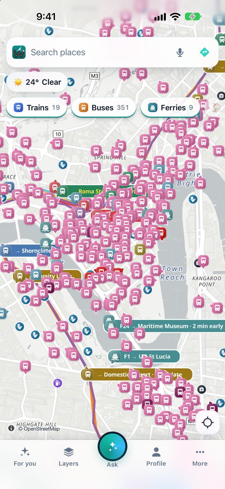

Wayaroo › 城市列表 › 布里斯班 · English
布里斯班的公交、火车和渡轮，在一张地图上实时显示
Wayaroo 根据 Translink 的公开实时数据，在地图上显示布里斯班和昆士兰州东南部行驶中的公交、火车和河上渡轮。点击任意一辆车，即可查看它的线路、开往哪里以及接下来停靠的站点。
免费，无需注册账户，在浏览器中打开。

当时地图上的车辆
2026年11月13日（星期五）墨尔本时间上午9:00，Wayaroo 在布里斯班的地图上共显示了 1,350 辆车（公交车 1,256、火车 78、渡轮 16）。
| 类型 | 当时的车辆数 |
|---|---|
| 公交车 | 1,256 |
| 火车 | 78 |
| 渡轮 | 16 |
同一数据源也覆盖黄金海岸和阳光海岸。同一时间，Wayaroo 在黄金海岸（Gold Coast）显示了 176 辆车，在阳光海岸（Sunshine Coast）显示了 55 辆。
车辆数在一天中会变化。数据来源：Translink，昆士兰州政府（公开的 GTFS 和 GTFS-Realtime 数据）。
您可以做什么
- 查看车辆现在在哪里。点击车辆，即可查看线路、开往哪里、接下来的站点，以及运营方提供预测时的晚点情况。
- 跟随一辆车。选择“跟车视角”，地图会一直跟随这辆车。
- 河上渡轮。河上渡轮连同航线一起显示在地图上。
- 最近的车站。“为你推荐”标签页列出离您最近的车站和火车站，并以分钟显示下一班车。
- 公共厕所。地图上显示澳大利亚的公共厕所，包括开放时间和无障碍信息。
规划行程
在昆士兰州，Wayaroo 可规划驾车、骑行和步行行程，并显示实时车辆和每个车站的下一班车。公共交通行程规划目前只在维多利亚州和新南威尔士州提供。
Wayaroo 在此显示的票价优惠：昆士兰州所有 Translink 火车、电车、公交和渡轮实行50澳分票价（长期）。 （核实日期：2026年11月2日；应用内附有来源链接。）
常见问题
有布里斯班的实时公交追踪吗？
有。Wayaroo 在一张地图上显示布里斯班行驶中的公交、火车和渡轮。免费，无需注册账户。
能看到我的公交什么时候到吗？
能。打开“为你推荐”标签页，即可查看离您最近的车站和下一班车。点击地图上的公交，即可查看它接下来停靠的站点。
能在布里斯班规划公共交通行程吗？
暂时不能。在昆士兰州，Wayaroo 可规划驾车、骑行和步行行程；公共交通方面，显示实时车辆和下一班车。
数据来自哪里？
来自昆士兰州政府发布的 Translink 公开实时数据。Wayaroo 是独立应用，Translink 不为其背书。请务必查看车站的显示屏。
Wayaroo 是免费的吗？
是的。Wayaroo 免费，无需注册账户。您的设置保存在您的手机上。
免费，无需注册账户，支持20种语言（含中文）。适用于 iPhone、iPad 和 Android。
其他城市（中文）：墨尔本 · 悉尼 · 黄金海岸 · 阿德莱德 · 堪培拉 · 凯恩斯 · 城市列表（英文）
Wayaroo 是 Ozrsym Pty Ltd 推出的独立应用。Translink 不运营本应用，也不为本应用背书。车辆位置和时间来自运营方的数据，可能有延迟或错误。请务必查看车站的显示屏。完整的数据来源列表：数据来源（英文）。